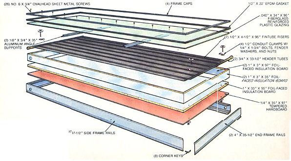
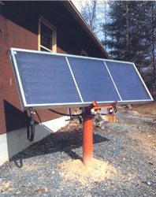
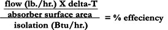

Is it possible to slash the cost of solar water heating and still retain store-bought quality?
In order for solar technology to be accepted, it must be affordable . . . but while many manufacturers go to great lengths to develop well-designed, functional products, they often fall short of achieving even tolerable cost-effectiveness.
Part of the problem is that a sizable portion of production cost lies in assembly. Many solar enthusiasts are circumventing that built-in thorn by fabricating their own system components, most notably the collector panels.
Understandably enough, though, not all of us have the skills - or the time and inclination - required to design and construct a state-of-the-art solar collector from scratch. However, kit assembly is within the realm of even a novice do-it-yourselfer . . . and, by presenting our experiences with a typical piece-together panel, we'll give you the chance to decide whether this alternative is your cup of tea.
Strictly speaking, our test collector didn't come delivered as a kit. Instead, it was pieced together from mail-ordered and locally available manufactured parts. Solar Components Corporation, P.O. Box 237, Manchester, NH 03105, proved to be an excellent source of solar energy products, accessible to anyone with a postage stamp; though it's possible to order certain parts directly from the manufacturer, the convenience of shopping by mail from one store can't be overlooked.
By the same token, it's pointless to send away for common items that are available in your local area. A glance at our materials list will allow you to determine which parts are best purchased in your own neighborhood.
Be aware that the panel we built is similar - if not nearly identical - to the flat plate hydronic collectors sold nationally by manufacturers and distributors. Our goal wasn't to make any technical advances, but to reduce costs to "volkspanel" proportions.
It's apparent from our illustration that there's not a whole lot to this project. In fact, aside from cutting the panel frames, the insulation and hardboard, and the glazing - and joining the fintube to the headers - it won't require that you be proficient in any shop skills whatsoever.
Nonetheless, we'll go over some of the finer points so there won't be any surprises when you're surrounded by strips of aluminum and copper. First, the flanged alloy frames come in 13' 4" lengths and have to be miter-cut with a hacksaw to make the collector box. This allows you to make panels of standard sizes - up to 4' X 9' - using two frame rails. For ease of assembly, we chose to use the corner-key design, which fastens together with push-in angled pins.
Our glazing selection was Kalwall Sun-Lite HP ... a high-transmittance, fiberglass-reinforced polymer that's very popular among solar site-builders. Because of this material's .040" thickness, the completed frame required two aluminum-angle supports beneath the plastic to prevent sagging. As an alternative, we'd suggest using a single sheet of double-strength glass cut to fit the finished opening.
The glazing seals are a matter of choice. We've found that ethylene-propylene diene monomer (EPDM) gaskets have admirable resistance to weather, sunlight, and chemicals, and are also flexible even in extreme temperatures. Some gaskets are grooved to accept glazing, while others are flat and can be cut or folded to fit. (Silicone sealant can be used as well, but it's obviously a messier proposition.)
As for the isocyanurate insulation board, it can easily be cut to size with a utility knife and a steel straightedge. Because of the frame design, you'll find it easiest to slip the side boards into the partially assembled box. Then, after the hardboard and the precut bottom panel are installed, the surfaces can be painted black, the absorber plate fitted in place, and the frame completed.
The absorber can be either purchased as a complete unit or made up yourself from fintubes (at about a 30% saving). Ideally, the header tubes should have appropriately spaced tees pulled off of them . . . either by the component supplier or by you, using a unibit and an extractor tool. Short of that, the fintube risers can be brazed directly to holes in the headers, but this method invites potential leakage through mechanical and thermal stress. You may also use solder joints (as we did for our testing), but they'll be subject to stress problems as well . . . and will make your collector unsuitable for use with potable water, forcing you to use it with a heat transfer medium, and closed-loop plumbing, to heat your household supply.
Naturally, the absorber plate must be coated black and mounted, and the headers appropriately capped and plumbed through the frame. (The frames come with mounting clamps for just about any application.)
TRIAL WITHOUT ERROR
LIST OF MATERIALS
(2)13' 4" corner key frame sections w/caps
(8)corner keys
(7)1/2" X 4-1/2" X 96" unpainted copper fintubes
(2)3/4" X 33-1/2" copper header tubes w/caps
1/2" X 22' EPDM rubber gasket
3' X 8' fiberglass-reinforced plastic glazing
1" X 4' X 8' foil-faced isocyanurate insulation board
1/4" X 3' X 8' tempered hardboard
(2)1/8" X 3/4" X 3' aluminum angle supports
13 oz. Thurmalox black solar collector paint
(4)1/2" conduit clamps w/ 1/4" X 1-3/4" bolts and nuts
(26)No. 6 X 314" ovalhead sheet metal screws
We can't speculate on how this panel might function at your specific site, but we can provide you with its performance data taken from tests made at our North Carolina location. We assumed that this panel would most likely be used in a closed-loop system, with a heat exchanger incorporated into the domestic hot water storage tank, so that's how we set it up. To assure accurate and consistent readings, we used fixed thermocouples to establish temperatures, and an insolation meter to determine the amount of sunlight available to the absorber surface on a Btu-per-square-foot-per-hour basis. The panel was fastened to a permanent mount, and the data were recorded during the same two-hour period each midday.
In order to keep the "fluke factor" to a minimum, we took 47 separate readings and averaged the results. A typical entry noted the date, time, water inlet and outlet temperatures (from which we established the differential, or delta-T), the ambient temperature, the water flow rate, and the number of Btu per hour available in insolation.
Given the formula:
we merely had to plug in the values to determine how effectively our homemade device converted water to hot water. So, for example, the standard 1/2-gallon-per-minute flow delivered by our circulating pump figures out to 30 gallons an hour, or - by weight - 250 pounds per hour. This times an average deltaT (16.33°F) yields 4082.5, which divided by 22 (the square foot surface area of the aperture) gives us 185.56 . . . the number of Btu gained per square foot per hour. By comparing this to the number of Btu actually available over the same period through insolation, we can ascertain the collector's percentage of efficiency - in this case 65%.
So what's the bottom line? In dollars and cents, the cost of building this panel from premanufactured parts came to just over $200, which puts it in the $10-per-square-foot range. In comparison, a typical factory-made collector may cost twice that . . . a factor that should, of course, be balanced against its quality and long-term performance. As for efficiency, many manufacturers refrain from making claims, because they can't be responsible for installation practices. The final decision is yours, and - as is often the case - you'll probably get what you pay for . . . but you can choose to spend either your money or your time!
EDITOR'S NOTE: The Solar Components Corporation catalog is available from the address above at a cost of $1.00 to those who make reference to this article. Another component supplier, Solar Usage Now (Box 306, Bascom, OH 44809), also has a catalog, which is available for $7.95.
A couple of MOTHER's staffers have been working on a hot air collector designed for the home-builder. We'll be running a full report on that in an upcoming issue!
|
 |
 |
 |